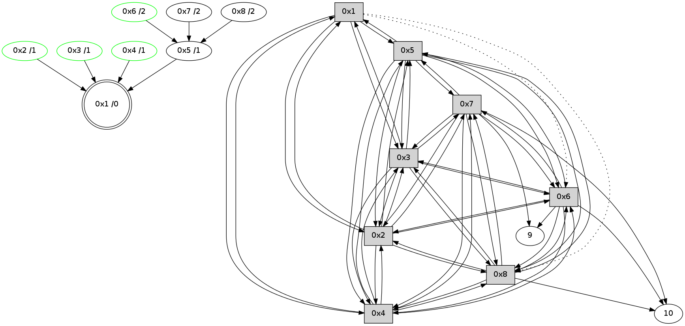

>> << IDX [start] -100 -25 -5 +0 +5 +25 +100 [340.045380831]
 Previous packets
----------------------------------------------------------------------
335.080633 beacon01(11f6) #0 coord=01,02,03,04,05,06,07,08,0a,09 cycle=688.0ms assoc
-- color-indic=0 64 c7 e1
335.090782 beacon02(11f6) #0 coord=01,02,03,04,05,06,07,08,0a,09 cycle=688.0ms assoc 64 54 d0
335.100768 beacon03(11f6) #0 coord=01,02,03,04,05,06,07,08,0a,09 cycle=688.0ms assoc 64 2e 9d
335.110769 beacon04(11f6) #0 coord=01,02,03,04,05,06,07,08,0a,09 cycle=688.0ms assoc 64 59 77
335.120769 beacon05(11f6) #0 coord=01,02,03,04,05,06,07,08,0a,09 cycle=688.0ms assoc 64 23 3a
335.130769 beacon06(11f6) #0 coord=01,02,03,04,05,06,07,08,0a,09 cycle=688.0ms assoc 64 ad ed
335.140769 beacon07(11f6) #0 coord=01,02,03,04,05,06,07,08,0a,09 cycle=688.0ms assoc 64 d7 a0
335.150773 beacon08(11f6) #0 coord=01,02,03,04,05,06,07,08,0a,09 cycle=688.0ms assoc 64 52 31
335.249142 [Hello(1): seq=160 sym=5,3,2,4 asym=8,6 sysInfo= stat=5:8,0,4,0/3:11,0,4,0/2:5,0,4,0/4:9,0,4,0/8:11,0,3,0/6:7,0,3,0]
----------------------------------------------------------------------
335.868771 beacon01(11f6) #0 coord=01,02,03,04,05,06,07,08,0a,09 cycle=688.0ms assoc
-- color-indic=0 64 03 ef
335.878949 beacon02(11f6) #0 coord=01,02,03,04,05,06,07,08,0a,09 cycle=688.0ms assoc 64 90 de
335.888906 beacon03(11f6) #0 coord=01,02,03,04,05,06,07,08,0a,09 cycle=688.0ms assoc 64 ea 93
335.898907 beacon04(11f6) #0 coord=01,02,03,04,05,06,07,08,0a,09 cycle=688.0ms assoc 64 9d 79
335.908907 beacon05(11f6) #0 coord=01,02,03,04,05,06,07,08,0a,09 cycle=688.0ms assoc 64 e7 34
335.918909 beacon06(11f6) #0 coord=01,02,03,04,05,06,07,08,0a,09 cycle=688.0ms assoc 64 69 e3
335.928907 beacon07(11f6) #0 coord=01,02,03,04,05,06,07,08,0a,09 cycle=688.0ms assoc 64 13 ae
335.938912 beacon08(11f6) #0 coord=01,02,03,04,05,06,07,08,0a,09 cycle=688.0ms assoc 64 96 3f
335.989153 [Hello(7): seq=160 sym=10,5,6,8,3,2,4,9 sysInfo= stat=10:8,0,3,0/5:0,0,4,0/6:11,0,3,0/8:12,0,3,0/3:4,0,4,0/2:6,0,4,0/4:4,0,3,0/9:12,0,4,0]
336.015184 [Hello(3): seq=160 sym=1,2,7,5,6,8,4 sysInfo= stat=1:0,0,4,0/2:6,0,4,0/7:9,0,4,0/5:8,0,3,0/6:2,0,4,0/8:9,0,3,0/4:11,0,4,0]
336.021157 [Hello(4): seq=160 sym=1,2,5,6,3,8,7 sysInfo= stat=1:15,0,4,0/2:7,0,4,0/5:10,0,4,0/6:2,0,4,0/3:12,0,4,0/8:9,0,3,0/7:14,0,4,0]
336.043444 [Hello(5): seq=160 sym=1,2,7,6,3,8,4 mpr= sysInfo= stat=1:0,0,4,0/2:5,0,4,0/7:12,0,4,0/6:4,0,3,0/3:10,0,4,0/8:9,0,3,0/4:11,0,4,0]
336.073159 [Hello(2): seq=160 sym=1,7,5,3,8,4,6 sysInfo= stat=1:15,0,4,0/7:8,0,4,0/5:8,0,4,0/3:8,0,4,0/8:9,0,3,0/4:8,0,4,0/6:12,0,3,0]
336.112091 [Hello(8): seq=160 sym=2,7,5,6,3,4,10 sysInfo= stat=2:8,0,4,0/7:1,0,4,0/5:15,0,3,0/6:12,0,3,0/3:12,0,4,0/4:8,0,3,0/10:1,0,2,0]
----------------------------------------------------------------------
336.656908 beacon01(11f6) #0 coord=01,02,03,04,05,06,07,08,0a,09 cycle=688.0ms assoc
-- color-indic=0 64 bf ea
336.667062 beacon02(11f6) #0 coord=01,02,03,04,05,06,07,08,0a,09 cycle=688.0ms assoc 64 2c db
336.677043 beacon03(11f6) #0 coord=01,02,03,04,05,06,07,08,0a,09 cycle=688.0ms assoc 64 56 96
336.687043 beacon04(11f6) #0 coord=01,02,03,04,05,06,07,08,0a,09 cycle=688.0ms assoc 64 21 7c
336.697044 beacon05(11f6) #0 coord=01,02,03,04,05,06,07,08,0a,09 cycle=688.0ms assoc 64 5b 31
336.707044 beacon06(11f6) #0 coord=01,02,03,04,05,06,07,08,0a,09 cycle=688.0ms assoc 64 d5 e6
336.717044 beacon07(11f6) #0 coord=01,02,03,04,05,06,07,08,0a,09 cycle=688.0ms assoc 64 af ab
336.727049 beacon08(11f6) #0 coord=01,02,03,04,05,06,07,08,0a,09 cycle=688.0ms assoc 64 2a 3a
336.842430 [Hello(1): seq=161 sym=5,3,2,4 asym=8,6 sysInfo= stat=5:8,0,4,0/3:12,0,4,0/2:6,0,4,0/4:10,0,4,0/8:12,0,3,0/6:7,0,3,0]
336.844928 [STC(1) #0.5 to-color d=0]
336.869747 [STC(2)->1 #0.5 stable,to-color d=1]
336.873644 [TreeStatus(2)-.->1 #0.5 stable child=1]
336.878062 [STC(5)->1 #0.5 to-color d=1]
336.902390 [STC(7)->5-.->1 #0.5 to-color d=2]
----------------------------------------------------------------------
337.445042 beacon01(11f6) #0 coord=01,02,03,04,05,06,07,08,0a,09 cycle=688.0ms assoc
-- color-indic=0 64 8b f2
337.455222 beacon02(11f6) #0 coord=01,02,03,04,05,06,07,08,0a,09 cycle=688.0ms assoc 64 18 c3
337.465177 beacon03(11f6) #0 coord=01,02,03,04,05,06,07,08,0a,09 cycle=688.0ms assoc 64 62 8e
337.475177 beacon04(11f6) #0 coord=01,02,03,04,05,06,07,08,0a,09 cycle=688.0ms assoc 64 15 64
337.485178 beacon05(11f6) #0 coord=01,02,03,04,05,06,07,08,0a,09 cycle=688.0ms assoc 64 6f 29
337.495177 beacon06(11f6) #0 coord=01,02,03,04,05,06,07,08,0a,09 cycle=688.0ms assoc 64 e1 fe
337.505178 beacon07(11f6) #0 coord=01,02,03,04,05,06,07,08,0a,09 cycle=688.0ms assoc 64 9b b3
337.515183 beacon08(11f6) #0 coord=01,02,03,04,05,06,07,08,0a,09 cycle=688.0ms assoc 64 1e 22
337.632668 [Hello(5): seq=161 sym=1,2,7,6,3,8,4 sysInfo= stat=1:1,0,5,0/2:6,0,5,1/7:12,0,5,0/6:4,0,3,0/3:10,0,4,0/8:10,0,3,0/4:11,0,4,0]
337.649320 [Hello(3): seq=161 sym=1,2,7,5,6,8,4 sysInfo= stat=1:1,0,5,0/2:7,0,5,1/7:9,0,5,0/5:9,0,4,0/6:2,0,4,0/8:10,0,3,0/4:12,0,4,0]
337.652553 [Hello(4): seq=161 sym=1,2,5,6,3,8,7 sysInfo= stat=1:0,0,5,0/2:8,0,5,1/5:11,0,5,0/6:2,0,4,0/3:12,0,4,0/8:10,0,3,0/7:14,0,5,0]
337.655242 [STC(3)->1 #0.5 stable,to-color d=1]
337.657855 [TreeStatus(3)-.->1 #0.5 stable child=1]
337.659421 [Hello(2): seq=161 sym=1,7,5,3,8,4,6 sysInfo= stat=1:0,0,5,0/7:8,0,5,0/5:9,0,5,0/3:9,0,4,0/8:10,0,3,0/4:9,0,4,0/6:12,0,3,0]
337.664358 [STC(4)->1 #0.5 stable,to-color d=1]
337.666327 [TreeStatus(4)-.->1 #0.5 stable child=1]
337.676673 [Hello(6): seq=161 sym=10,7,5,3,8,4,2,9 sysInfo= stat=10:10,0,2,0/7:1,0,5,0/5:3,0,5,0/3:0,0,5,1/8:10,0,3,0/4:6,0,3,1/2:10,0,5,1/9:6,0,4,0]
337.681605 [STC(6)->5-.->1 #0.5 stable,to-color d=2]
337.685182 [TreeStatus(6)-.->1 #0.5 stable child=1]
337.690679 [Hello(8): seq=161 sym=2,7,5,6,3,4,10 sysInfo= stat=2:9,0,5,1/7:2,0,5,0/5:0,0,4,0/6:13,0,4,1/3:12,0,5,1/4:8,0,3,1/10:2,0,2,0]
337.695472 [STC(8)->5-.->1 #0.5 to-color d=2]
----------------------------------------------------------------------
338.233178 beacon01(11f6) #0 coord=01,02,03,04,05,06,07,08,0a,09 cycle=688.0ms assoc
-- color-indic=0 64 37 f7
338.243348 beacon02(11f6) #0 coord=01,02,03,04,05,06,07,08,0a,09 cycle=688.0ms assoc 64 a4 c6
338.253313 beacon03(11f6) #0 coord=01,02,03,04,05,06,07,08,0a,09 cycle=688.0ms assoc 64 de 8b
338.263314 beacon04(11f6) #0 coord=01,02,03,04,05,06,07,08,0a,09 cycle=688.0ms assoc 64 a9 61
338.273313 beacon05(11f6) #0 coord=01,02,03,04,05,06,07,08,0a,09 cycle=688.0ms assoc 64 d3 2c
338.283314 beacon06(11f6) #0 coord=01,02,03,04,05,06,07,08,0a,09 cycle=688.0ms assoc 64 5d fb
338.293314 beacon07(11f6) #0 coord=01,02,03,04,05,06,07,08,0a,09 cycle=688.0ms assoc 64 27 b6
338.303318 beacon08(11f6) #0 coord=01,02,03,04,05,06,07,08,0a,09 cycle=688.0ms assoc 64 a2 27
338.427431 [Hello(1): seq=162 sym=5,3,2,4 asym=8,6 sysInfo= stat=5:9,0,5,0/3:13,0,5,1/2:7,0,5,1/4:11,0,4,1/8:13,0,4,0/6:8,0,4,1]
----------------------------------------------------------------------
339.021314 beacon01(11f6) #0 coord=01,02,03,04,05,06,07,08,0a,09 cycle=688.0ms assoc
-- color-indic=0 64 f3 f9
339.031477 beacon02(11f6) #0 coord=01,02,03,04,05,06,07,08,0a,09 cycle=688.0ms assoc 64 60 c8
339.041450 beacon03(11f6) #0 coord=01,02,03,04,05,06,07,08,0a,09 cycle=688.0ms assoc 64 1a 85
339.051450 beacon04(11f6) #0 coord=01,02,03,04,05,06,07,08,0a,09 cycle=688.0ms assoc 64 6d 6f
339.061450 beacon05(11f6) #0 coord=01,02,03,04,05,06,07,08,0a,09 cycle=688.0ms assoc 64 17 22
339.071450 beacon06(11f6) #0 coord=01,02,03,04,05,06,07,08,0a,09 cycle=688.0ms assoc 64 99 f5
339.081450 beacon07(11f6) #0 coord=01,02,03,04,05,06,07,08,0a,09 cycle=688.0ms assoc 64 e3 b8
339.091453 beacon08(11f6) #0 coord=01,02,03,04,05,06,07,08,0a,09 cycle=688.0ms assoc 64 66 29
339.162979 [Hello(6): seq=162 sym=10,7,5,3,8,4,2,9 sysInfo= stat=10:10,0,2,0/7:1,0,5,0/5:3,0,5,0/3:0,0,5,1/8:11,0,4,0/4:6,0,3,1/2:10,0,5,1/9:6,0,4,0]
339.167801 [Hello(4): seq=162 sym=1,2,5,6,3,8,7 sysInfo= stat=1:1,0,5,0/2:8,0,5,1/5:11,0,5,0/6:3,0,5,1/3:13,0,4,0/8:11,0,4,0/7:14,0,5,0]
339.198363 [Hello(2): seq=162 sym=1,7,5,3,8,4,6 sysInfo= stat=1:1,0,5,0/7:8,0,5,0/5:9,0,5,0/3:9,0,5,0/8:11,0,4,0/4:10,0,4,1/6:14,0,4,1]
339.207327 [Hello(8): seq=162 sym=2,7,5,6,3,4,10 sysInfo= stat=2:10,0,5,1/7:2,0,5,0/5:0,0,4,0/6:14,0,4,1/3:12,0,5,1/4:9,0,3,1/10:2,0,2,0]
339.234016 [Hello(5): seq=162 sym=1,2,7,6,3,8,4 sysInfo= stat=1:2,0,5,0/2:8,0,5,1/7:12,0,5,0/6:6,0,4,1/3:11,0,5,1/8:12,0,4,0/4:13,0,4,1]
339.238847 [Hello(3): seq=162 sym=1,2,7,5,6,8,4 sysInfo= stat=1:2,0,5,0/2:9,0,5,1/7:9,0,5,0/5:9,0,4,0/6:4,0,5,1/8:12,0,4,0/4:13,0,4,1]
339.245721 [Hello(7): seq=162 sym=10,5,6,8,3,2,4,9 sysInfo= stat=10:11,0,3,0/5:2,0,5,0/6:14,0,4,1/8:15,0,4,0/3:7,0,5,1/2:9,0,5,1/4:4,0,3,0/9:14,0,4,0]
----------------------------------------------------------------------
339.809453 beacon01(11f6) #0 coord=01,02,03,04,05,06,07,08,0a,09 cycle=688.0ms assoc
-- color-indic=0 64 4f fc
339.819624 beacon02(11f6) #0 coord=01,02,03,04,05,06,07,08,0a,09 cycle=688.0ms assoc 64 dc cd
339.829587 beacon03(11f6) #0 coord=01,02,03,04,05,06,07,08,0a,09 cycle=688.0ms assoc 64 a6 80
339.839588 beacon04(11f6) #0 coord=01,02,03,04,05,06,07,08,0a,09 cycle=688.0ms assoc 64 d1 6a
339.849589 beacon05(11f6) #0 coord=01,02,03,04,05,06,07,08,0a,09 cycle=688.0ms assoc 64 ab 27
339.879593 beacon08(11f6) #0 coord=01,02,03,04,05,06,07,08,0a,09 cycle=688.0ms assoc 64 da 2c